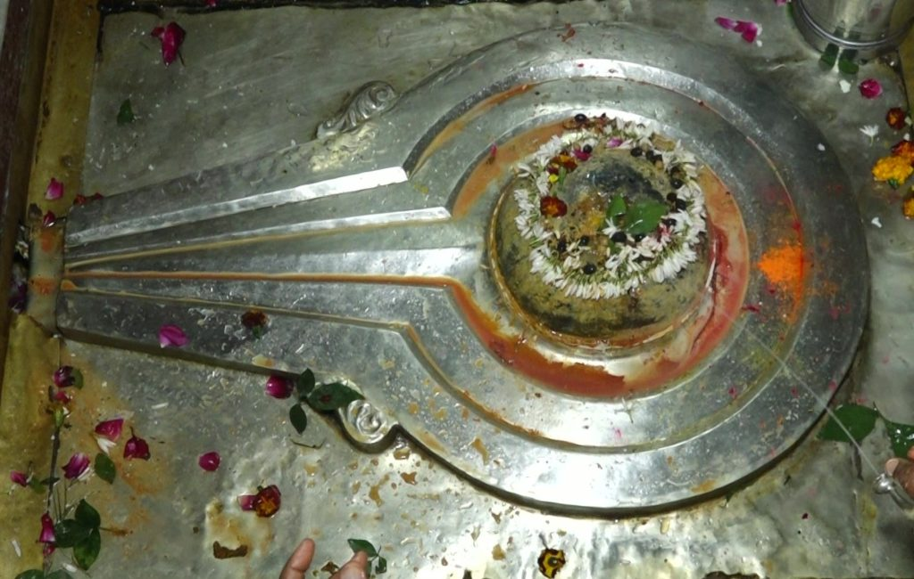

<?xml version="1.0" encoding="UTF-8"?><rss version="2.0"
	xmlns:content="http://purl.org/rss/1.0/modules/content/"
	xmlns:wfw="http://wellformedweb.org/CommentAPI/"
	xmlns:dc="http://purl.org/dc/elements/1.1/"
	xmlns:atom="http://www.w3.org/2005/Atom"
	xmlns:sy="http://purl.org/rss/1.0/modules/syndication/"
	xmlns:slash="http://purl.org/rss/1.0/modules/slash/"
	>

<channel>
	<title>Malteeshwar &#8211; Varanasi Temples</title>
	<atom:link href="index.html" rel="self" type="application/rss+xml" />
	<link>../../../../../index.html</link>
	<description>Temples of Varanasi as referred to in Kashi Khand</description>
	<lastBuildDate>Thu, 19 Jun 2025 05:16:46 +0000</lastBuildDate>
	<language>en-US</language>
	<sy:updatePeriod>hourly</sy:updatePeriod>
	<sy:updateFrequency>1</sy:updateFrequency>
	<generator>https://wordpress.org/?v=4.6.29</generator>
	<item>
		<title>MALTEESHWAR</title>
		<link>../../../../../shiva-temples/malteeshwar/index.html</link>
		<pubDate>Mon, 10 May 2010 15:39:33 +0000</pubDate>
		<dc:creator><![CDATA[admin]]></dc:creator>
				<category><![CDATA[Malteeshwar]]></category>
		<category><![CDATA[Other Shiva Temples (L-R)]]></category>
		<category><![CDATA[Shiva Temples]]></category>
		<category><![CDATA[mrityunjay]]></category>
		<category><![CDATA[teerth]]></category>

		<guid isPermaLink="false">../../../../../p=434.html</guid>
		<description><![CDATA[Lord Shiva was describing the various sacred Teerths (Ponds), Koop (Wells) and places of worship in Kashi.  Lord Shiva described such places with immense pleasure (Kashi Khand, Chapter 97). In the vicinity of Hasti Paleshwar is the Malteeshwar Ling. By worshipping this Ling, the devotee is blessed with prosperity. In the vicinity of the Ling [&#8230;]]]></description>
				<content:encoded><![CDATA[<p>Lord Shiva was describing the various sacred Teerths (Ponds), Koop (Wells) and places of worship in Kashi.  Lord Shiva described such places with immense pleasure (Kashi Khand, Chapter 97).</p>
<p>In the vicinity of Hasti Paleshwar is the Malteeshwar Ling. By worshipping this Ling, the devotee is blessed with prosperity. In the vicinity of the Ling is Kalodak Koop (Well). The water from the well is capable of curing all diseases.</p>
<p>&nbsp;</p>
<p><strong>&#8212;&#8212;&#8212;&#8212;&#8212;&#8212;&#8212;&#8212;&#8212;&#8212;&#8212;&#8212;&#8212;&#8212;&#8212;&#8212;&#8212;&#8212;&#8212;&#8212;&#8212;&#8212;&#8212;&#8212;&#8212;&#8212;&#8212;&#8212;&#8212;&#8212;&#8212;&#8212;&#8212;&#8212;-</strong></p>
<p><strong> </strong></p>
<p><span style="text-decoration: underline;"><strong>Kashi Khand, Chapter 31, Shlok 150</strong></span></p>
<p><strong> </strong></p>
<p><strong>तीर्थे कालोदके स्नात्वा कृत्वा तर्पणमत्वर:</strong></p>
<p><strong>विलोक्य कालराजं च निरयादुद्धरेत् पितॄन्</strong></p>
<p>&nbsp;</p>
<p><strong>By taking bath in kaalodak teerth (koop), performing tarpan and have darshan of Kaal Bhairav, the devotee releases his forefathers from Hell (He is released from Pitru Dosh).</strong></p>
<p><strong> </strong></p>
<p><strong>&#8212;&#8212;&#8212;&#8212;&#8212;&#8212;&#8212;&#8212;&#8212;&#8212;&#8212;&#8212;&#8212;&#8212;&#8212;&#8212;&#8212;&#8212;&#8212;&#8212;&#8212;&#8212;&#8212;&#8212;&#8212;&#8212;&#8212;&#8212;&#8212;&#8212;&#8212;&#8212;&#8212;&#8212;&#8212;</strong></p>
<p>&nbsp;</p>
<p>&nbsp;</p>
<p><strong>Please watch our YouTube Video about Malteeshwar at following Link</strong></p>
<p>&nbsp;</p>
<p><a href="https://www.youtube.com/watch?v=L6Hr3HZADGg&amp;t=10s">https://www.youtube.com/watch?v=L6Hr3HZADGg&amp;t=10s</a></p>
<p>&nbsp;</p>
<p><strong>LOCATION OF MALTEESHWAR</strong></p>
<p>Malteeshwar is located at K-52/39, inside Mrityunjay Mahadev Temple.  People can approach this temple by rickshaw through Bisheshwarganj/GPO.</p>
<p>&nbsp;</p>
<p><strong>LOCATION OF MRITYUNJAY MAHADEV TEMPLE AS PER GOOGLE MAPS IS GIVEN BELOW</strong></p>
<p>&nbsp;</p>
<p><a href="https://www.google.com/maps/place/Mahamrityunjay+Mahadev+Temple/@25.3222648,83.014546,20z/data=!4m12!1m6!3m5!1s0x398e2e3d7dd1fb31:0x15ea53adbe61e75a!2sAnjaneya+Temple!8m2!3d25.3221965!4d83.0148166!3m4!1s0x398e2e3d59280bad:0x5b8de15c093375b2!8m2!3d25.3221891!4d83.0147241">https://www.google.com/maps/place/Mahamrityunjay+Mahadev+Temple/@25.3222648,83.014546,20z/data=!4m12!1m6!3m5!1s0x398e2e3d7dd1fb31:0x15ea53adbe61e75a!2sAnjaneya+Temple!8m2!3d25.3221965!4d83.0148166!3m4!1s0x398e2e3d59280bad:0x5b8de15c093375b2!8m2!3d25.3221891!4d83.0147241</a></p>
<p>&nbsp;</p>
<p><strong><span style="text-decoration: underline;">TYPES OF POOJA</span></strong></p>
<p>The temple is open from 04.00 a.m. to 12.00 midnight for worship.  People can perform pooja as per their convenience with sacred Ganges water and flowers etc.</p>
<p>&nbsp;</p>
]]></content:encoded>
			</item>
	</channel>
</rss>
